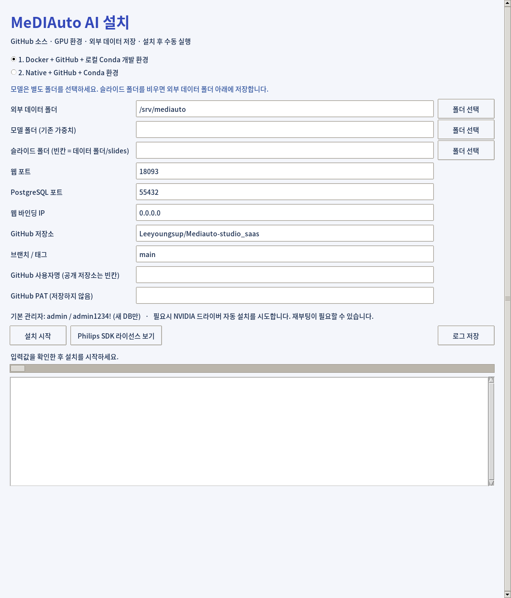
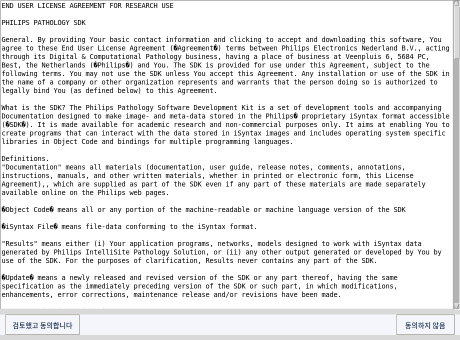

MeDIAuto 설치·실행·개발 가이드GUI INSTALLER · r15 · 2026.09.22
MeDIAuto AI
설치 · 실행 · 개발 가이드
Windows / Linux · GUI 설치 관리자
설치 파일 + 모델 폴더를 준비하세요
GUI에서 경로와 브랜치를 입력하고 설치합니다.
설치가 끝나면 직접 서버를 시작합니다.
미리 준비할 것
- OS에 맞는 GUI 설치 파일과 기존 AI 모델 11개가 있는 폴더
- NVIDIA GPU, 인터넷 연결, 관리자 권한
- 비공개 GitHub 저장소: 사용자명과 저장소 읽기 권한이 있는 PAT
모델은 설치 파일에 포함되지 않습니다. Philips SDK와 Windows OpenSlide 지원 파일은 배포물에 포함되어 있습니다. 소스와 설치 의존성은 인터넷으로 가져옵니다.
Windows
MeDIAuto-Setup-windows-x64.exe를 실행합니다. 설치 폴더를 고르고 관리자 권한 요청을 승인하면 필요한 Python을 준비한 뒤 입력 창이 열립니다. 다시 열 때는 설치 폴더의 setup-gui.bat를 실행합니다.
Linux 데스크톱 — Ubuntu/Debian x64
chmod +x MeDIAuto-Setup-linux-x64.run
./MeDIAuto-Setup-linux-x64.run
$HOME/MeDIAuto-GPU-installer에 압축을 풉니다. 그래픽 데스크톱과 관리자 인증 창(polkit)이 필요합니다. 다시 열 때는 bash setup-gui.sh, SSH 전용 환경에서는 bash install.sh를 사용합니다.
Windows 실행 파일은 코드 서명이 없습니다. 이 문서는 r15 구현을 기준으로 하며, 모든 PC의 드라이버 설치·재부팅을 실기 검증한 것은 아닙니다.
01 · 실제 설치 화면
메인 화면에서 입력하기

r15 GUI를 Linux에서 실제 실행해 캡처했습니다. Windows는 글꼴·창 모양·기본 경로가 다릅니다.
위에서부터 설치 방식 → 저장 경로 → 포트 → GitHub 순서로 입력한 뒤 설치 시작을 누릅니다. 아래 로그 영역에서 진행 상황을 확인하고 로그 저장으로 기록을 남길 수 있습니다.
02 · 입력 항목
무엇을 입력해야 하나요?
| 항목 | 입력 / 기본 동작 |
|---|
| 외부 데이터 폴더 | Windows: C:/MeDIAutoData
Linux: /srv/mediauto
DB·주석·패치·결과·로그를 하위 폴더에 저장 |
| 모델 폴더 | 필수. 기존 가중치 11개가 있는 별도 폴더 |
| 슬라이드 폴더 | 빈칸이면 외부 데이터 폴더/slides |
| 웹 포트 | 18093 — 브라우저 접속용 |
| PostgreSQL 포트 | 55432 — DB 연결용. 충돌하면 새 포트 입력 창 표시 |
| 웹 바인딩 IP | 0.0.0.0: LAN 접속 허용
127.0.0.1: 이 PC에서만 접속 |
| GitHub 저장소 | Leeyoungsup/Mediauto-studio_saas |
| 브랜치 / 태그 | main. 새 clone에 사용할 소스 선택 |
| 사용자명 / PAT | 공개 저장소는 빈칸 가능. PAT는 GitHub 로그인 비밀번호가 아닙니다. 입력을 가리고 파일에 저장하지 않습니다. |
두 설치 방식의 차이
| 1. Docker + GitHub | 2. Native + GitHub |
|---|
Git 소스 + Docker 환경
PC의 Conda 환경 2개 + PostgreSQL
Docker 또는 로컬 개발 실행 선택 | Git 소스 + PC의 Conda 환경 2개
PostgreSQL
로컬 개발·실행 |
둘 다 .git이 있는 작업 폴더를 유지합니다. Conda가 없으면 Miniconda를 설치합니다. 메인 환경은 medicus-saas, Philips 환경은 Windows philips-sdk-py37 / Linux philips-sdk-py38입니다.
기존 설치를 다시 열면 저장된 경로·포트 설정을 표시하고 잠급니다. 재시도로 기존 데이터 위치를 임의 변경하지 않으며, Git 작업 폴더를 자동 pull/reset하지 않습니다.
03 · 설치 진행
드라이버 · 동의 · 완료
설치기는 드라이버와 필수 도구를 확인하고 소스·모델·PostgreSQL·Conda 환경·SDK를 준비한 뒤 GPU와 앱 초기화를 점검합니다. 진행 막대는 완료율이 아닌 작업 중 표시입니다.
NVIDIA 드라이버 자동 설치
호환 버전이 없으면 자동 설치를 시도합니다. Windows는 Windows Update 제공 드라이버(570.65 이상), Linux는 OS 저장소 패키지(570.26 이상)를 사용합니다. 호환 패키지를 구할 수 없으면 중단하고 수동 설치를 안내합니다. CPU로 전환하지 않습니다.
재부팅 안내가 나오면 직접 재부팅한 뒤 같은 설치기를 다시 실행하세요. Linux Secure Boot는 부팅 화면에서 MOK 등록이 필요할 수 있습니다.
Linux Docker 방식은 NVIDIA Container Toolkit도 자동 설치·구성합니다. Windows Docker Desktop은 Windows 드라이버와 WSL2 GPU 지원을 사용합니다.
Philips SDK 라이선스 동의

실제 라이선스 창. 스크롤하여 전체 내용을 검토한 뒤 직접 동의합니다.
설치 완료 ≠ 서버 실행
앱 자동 시작과 로그인 시 자동 실행은 등록하지 않습니다. 다음 페이지의 start 명령으로 직접 실행하세요. PostgreSQL과 Docker 엔진 서비스는 앱과 별개입니다.
새 DB의 최초 관리자: admin / admin1234!
기존 DB의 관리자 비밀번호는 재설치로 변경하지 않습니다.
폴더 구조와 데이터 위치
MeDIAuto-GPU-installer/
install.bat / install.sh 설치 방식 선택
native/ 2번 설치
application/ 실제 Git 작업 폴더 (.git 포함)
backend/ Python 서버·AI 코드
frontend/ 화면 코드
start.bat / start.sh 프로젝트 원래 실행 스크립트
start.bat / start.sh 설치 설정을 읽는 실행 진입점
launch.py / runner.py Conda·경로·DB 설정 적용
.install-location.json 외부 저장 루트 위치
docker/ 1번 설치
application/ Docker·로컬 공통 Git 작업 폴더
start.bat / start.sh 빌드 후 Docker 실행
stop.bat / stop.sh Docker 종료
start-local.bat / .sh PC의 Conda로 로컬 실행
MeDIAuto-local.code-workspace
Philips_SDK/ OS에 맞는 SDK와 설치 지원 파일
vendor/ Windows OpenSlide DLL 패키지
외부 저장 루트
data/
config/ settings.json, app.json, compose.json(1번), 로그
database/ PostgreSQL 데이터 및 database/log
secrets/ 앱 서명·암호화 키
slides/ 기본 슬라이드 위치 (별도 지정 가능)
patches/ 패치·세포 주석 파일
annotations/ results/ logs/ 주석·분석 결과·앱 로그
tiles/ dicom/ cache/ app_config/ temp/
모델은 별도 지정한 폴더를 사용합니다. 계정·프로젝트·일부 주석·활동 로그는 DB에 저장됩니다. 코드 폴더와 DB는 별개이며, 데이터 백업에는 database와 secrets 및 필요한 파일 저장소가 포함되어야 합니다.
Conda 환경은 설치 폴더의 envs가 아니라 Conda가 관리하는 이름 환경입니다. 실제 위치는 conda env list로 확인합니다. 설정에는 비밀번호가 있으므로 config 파일 전체를 공유하거나 Git에 커밋하지 마세요.
Windows에서 시작·종료
설치 후 CMD를 새로 열어 실행합니다. 아래의 설치 경로는 자신의 경로로 바꾸세요. 명령은 CMD 기준입니다.
2번 네이티브 실행 — 설치 폴더에서
cd /d "C:\mediautoAI-dev\MeDIAuto-GPU-installer"
native\start.bat
VS Code가 native/application을 열고 있을 때
CMD 터미널: ..\start.bat
PowerShell 터미널: & ..\start.bat
부모 폴더의 start가 외부 DB·모델·저장 경로·웹 포트를 적용하고 현재 native/application 코드를 실행합니다. application 안의 동명 start 파일과 구분하세요.
1번 Docker 설치 — 실행 방식 선택
설치 폴더의 CMD에서:
docker\start-local.bat 로컬 Conda 서버 실행
docker\start.bat 현재 소스를 빌드하여 Docker 실행
docker\stop.bat Docker 서버 종료
docker/application의 CMD에서:
..\start-local.bat 로컬 실행
..\start.bat Docker 실행
브라우저 접속과 종료
웹 포트가 18093이면 http://localhost:18093에 접속합니다. 다른 포트를 선택했다면 바꿔 입력하세요. DB 포트(예: 55433)는 브라우저 주소에 쓰지 않습니다. 다른 PC에서는 서버의 LAN IP를 사용합니다.
종료는 실행 터미널에서 Ctrl+C입니다. Docker는 별도 터미널의 stop.bat으로도 종료할 수 있습니다. 앱은 수동 실행 방식이며, 종료 후 자동 재시작을 기대하지 마세요.
conda activate medicus-saas는 환경 전환만 합니다. 서버를 시작하려면 위 start 명령을 실행해야 합니다.
Linux에서 시작·종료
설치 후 새 bash 터미널을 열고 일반 사용자로 실행하세요. 설치 경로는 예시입니다.
2번 네이티브 실행
cd /home/user/MeDIAuto-GPU-installer
bash native/start.sh
# 이미 native/application 안이라면
bash ../start.sh
1번 Docker 설치 — 실행 방식 선택
cd /home/user/MeDIAuto-GPU-installer
bash docker/start-local.sh # 로컬 Conda 실행
bash docker/start.sh # Docker 빌드·실행
bash docker/stop.sh # Docker 종료
# 이미 docker/application 안이라면
bash ../start-local.sh # 로컬 실행
bash ../start.sh # Docker 실행
Docker 시작·종료 스크립트는 필요한 경우 sudo를 요청합니다. 로컬 실행 스크립트는 일반 사용자용입니다. 종료는 실행 터미널에서 Ctrl+C입니다.
이름으로 Conda 환경 사용
conda env list
conda activate medicus-saas
# Philips 모듈을 직접 점검할 때만 환경 전환
conda activate philips-sdk-py38
메인 환경과 Philips 환경은 별개입니다. 앱이 Philips용 Python을 호출하므로 서버 실행 전에 두 환경을 차례로 활성화할 필요는 없습니다.
어느 start.sh를 실행해야 하나요?
native/start.sh 또는 docker/start-local.sh를 사용합니다. application/start.sh는 프로젝트 원래 스크립트로, 설치기의 app.json을 자동으로 읽지 않습니다. 별도 환경 설정 없이 실행하면 기본 8092 포트나 다른 DB·저장 경로를 사용할 수 있습니다.
브라우저 주소는 설정한 웹 포트입니다. PostgreSQL 서비스가 실행 중이어야 합니다. 소스 폴더나 설치 폴더를 임의로 옮기면 저장된 절대 경로가 맞지 않게 됩니다.
VS Code와 코드 수정 반영
어느 폴더를 열어야 하나요?
| 설치 방식 | VS Code에서 열기 |
|---|
| 2번 | native/application |
| 1번 | docker/MeDIAuto-local.code-workspace
또는 docker/application |
1번의 작업 공간 파일에는 로컬 Conda Python 경로와 실행 구성이 들어 있습니다. VS Code의 Python·Python Debugger 확장이 있으면 MeDIAuto local server 구성을 선택해 디버깅할 수 있습니다. 2번은 application 폴더를 열고 통합 터미널에서 부모 start를 실행하세요.
수정한 코드는 언제 반영되나요?
| 변경 대상 | 로컬 Conda 실행 | Docker 실행 |
|---|
| backend Python | Ctrl+C → start 재실행 | 종료 → Docker start로 재빌드 |
| frontend HTML/JS/CSS | 저장 → 브라우저 Ctrl+F5 | 재빌드·재실행 → Ctrl+F5 |
| requirements 등 의존성 | install 재실행 → start | Docker start의 build에 반영 |
| DB 마이그레이션 | DB 백업 → 검토 후 실행. 시작 시 Alembic 적용 |
서버에는 자동 재시작 --reload가 설정되어 있지 않습니다. 백엔드는 저장만으로 실행 중인 프로세스에 반영되지 않습니다. 프런트에 빌드 도구가 필요한 변경을 추가했다면 해당 빌드도 수행해야 합니다.
1번은 Docker와 로컬이 같은 코드를 사용합니다
docker/application의 수정은 로컬 실행에서 직접 읽고, Docker에서는 다음 빌드에 들어갑니다. 현재 실행 중인 컨테이너가 소스 수정을 실시간으로 읽는 구조는 아닙니다.
환경과 설정 보존
설치 재실행은 Git checkout/pull/reset/clean을 하지 않습니다. 기존 브랜치와 수정·미추적 파일을 유지합니다. 이름 기반 Conda 환경은 같은 PC의 다른 설치와 공유될 수 있으므로 의존성 변경은 다른 실행에도 영향을 줄 수 있습니다.
브랜치 변경·업데이트 순서
- 서버를 Ctrl+C 또는 Docker stop으로 종료합니다.
- 현재 Git 변경을 확인하고 커밋하거나, 필요하면 직접 stash합니다.
- 원격 브랜치를 가져오고 원하는 브랜치로 전환·병합합니다.
- DB 변경이 있다면 먼저 백업합니다. 새 의존성·마이그레이션을 검토합니다.
- 필요한 설치 단계를 재실행한 뒤, 수동으로 서버를 시작합니다.
Git 명령 예시 — application 폴더에서
git status
git branch --show-current
git fetch origin
# 원하는 기존 브랜치로 전환 (이름은 예시)
git switch develop
# 로컬 커밋을 덮어쓰지 않는 빠른 업데이트
git merge --ff-only origin/develop
develop은 예시입니다. 실제 브랜치 이름으로 바꾸세요. 브랜치가 갈라져 fast-forward가 불가능하면 자동으로 덮어쓰지 말고 VS Code에서 병합 내용을 검토하세요. 새 브랜치는 필요에 따라 직접 생성합니다.
Windows와 Linux에서 각자 개발하려면 git switch -c dev/windows처럼 새 브랜치를 만드세요. 코드에는 설정으로 받은 경로를 사용하고 PC별 절대 경로를 넣지 않습니다. 런타임 데이터는 Git 밖에 보관합니다. 이미 추적 중인 파일은 .gitignore만 추가해도 추적이 해제되지 않으므로, 변경 전에 외부 백업을 확인하세요.
설치기가 하지 않는 것
자동 pull, 강제 reset, 로컬 변경 삭제, 자동 브랜치 전환을 하지 않습니다. 설치기에 입력한 브랜치는 최초 clone에 사용합니다. 이후 실제 브랜치는 application의 Git 상태를 따릅니다.
다시 설치기를 실행할 때
원래 설치 폴더의 setup-gui.bat / setup-gui.sh를 열고 기존 설치 방식을 선택합니다. CLI에서는 install.bat / install.sh를 사용할 수 있습니다. 1번은 로컬 개발 환경과 Docker 이미지를 함께 준비합니다. 설치가 끝나도 서버는 시작되지 않습니다.
GitHub PAT는 설치기에 저장하지 않습니다. 이후 fetch/push 인증은 VS Code 또는 Git에서 따로 설정하세요. DB와 외부 파일은 Git 브랜치로 되돌아가지 않습니다.
이 문서의 명령은 자동 병합이나 배포를 수행한 기록이 아니라 사용자가 실행할 절차입니다.
09 · 문제 해결
실패하면 로그부터 확인하세요
GUI의 로그 저장으로 설치 기록을 보관하세요. 마지막 conda run ... failed보다 그 위에 나온 최초 오류가 원인 파악에 중요합니다. 원인을 해결한 뒤 같은 설치기를 재실행합니다.
설치 중 runner.py --check에서 실패했다면 logs/app.log가 아직 없을 수 있습니다. 이때는 GUI 진행 로그 또는 설치 터미널 출력을 확인하세요.
| 증상 | 확인·조치 |
|---|
| GPU unavailable / 오래된 드라이버 | 드라이버 자동 설치 결과와 재부팅 안내 확인. 호환 드라이버가 제공되지 않으면 제조사/NVIDIA 드라이버 설치 후 재시도 |
| 포트 사용 중 | 기존 DB/앱을 확인하고 새 포트 선택. 설치기는 다른 DB 프로세스를 임의 종료하지 않음 |
| SSL 인증서 오류 | PC 시간·네트워크·회사 인증서 신뢰 확인. Windows 다운로드는 시스템 인증서 경로로 재시도하며 인증서 검증을 끄지 않음 |
| Git runtime data 추적 오류 | 선택한 소스 브랜치의 추적 파일 확인. 데이터 백업 후 Git 추적 해제와 ignore 반영. 기존 clone은 자동 pull되지 않음 |
| Conda / DLL 오류 | 새 터미널에서 conda env list 확인. 해당 Conda 환경으로 실행하고 같은 설치기로 재시도 |
| 웹 접속 안 됨 | 설치 후 start 실행 여부와 웹 포트 확인. LAN에서는 서버 IP, bind 0.0.0.0, 방화벽 확인 |
서버 실행 후 앱 로그
REM Windows CMD — 경로를 실제 외부 루트로 변경
powershell -NoProfile -Command "Get-Content -LiteralPath 'C:\MeDIAutoData\logs\app.log' -Tail 100"
# Linux
tail -n 100 /srv/mediauto/logs/app.log
PostgreSQL 추출·초기화 로그는 외부 루트의 config, DB 실행 로그는 database/log를 확인합니다.
오류가 나도 database·secrets·모델 폴더부터 삭제하지 마세요. 설정 파일에는 비밀번호가 있으므로 공유할 때는 오류 로그의 필요한 부분만 보내세요.
검증 범위: GUI 실제 표시·입력 흐름, 설치 코드 검사 및 모의 테스트. Windows Update와 각 PC의 실제 드라이버 설치·재부팅 전체 흐름은 별도 실기 확인이 필요합니다.